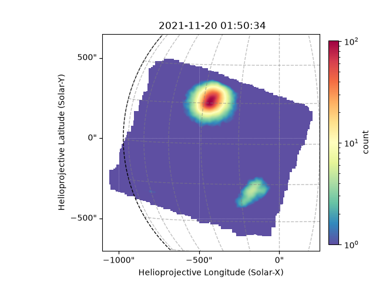
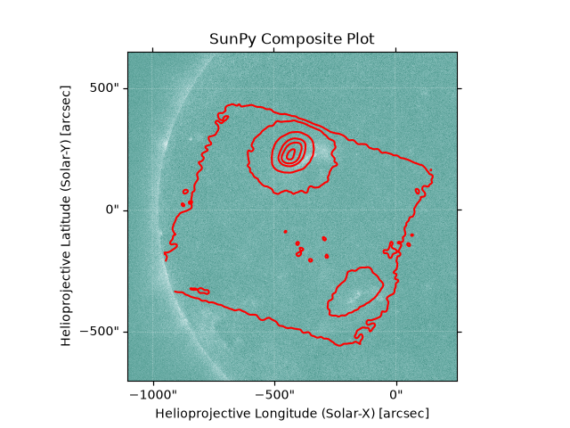

Note
Go to the end to download the full example code.
Plotting NuSTAR and AIA Images
This example shows making NuSTAR images and plotting them with AIA.
import ntpath
import os
import urllib.request
import astropy.units as u
import matplotlib.pyplot as plt
import sunpy.map
from astropy.coordinates import SkyCoord
from jdhsrpy import TEST_DATA_LOCATION
from jdhsrpy.image_filters import gaussian_filter
from jdhsrpy.nustar_evt import NustarEvt, draw_grid
Download an example “sunpos” NuSTAR EVT and SDO/AIA file.
url = f"{TEST_DATA_LOCATION}/test_nustar_data/nu20619003001A06_cl_sunpos.evt"
filename_evt = os.path.join(os.getcwd(), ntpath.split(url)[1])
if not os.path.isfile(filename_evt):
urllib.request.urlretrieve(url, filename_evt)
url = f"{TEST_DATA_LOCATION}/test_sdo_data/aia.lev1.94A_2021_11_20T02_25_35.12Z.image_lev1.fits"
directory_aia = os.path.join(os.getcwd(), "94angstrom")
filename_aia = os.path.join(directory_aia, ntpath.split(url)[1])
os.makedirs(os.path.join(directory_aia), exist_ok=True)
if not os.path.isfile(filename_aia):
urllib.request.urlretrieve(url, filename_aia)
Use the class to load in and work with the file.
nustar_object = NustarEvt(evt_filename=filename_evt)
NuSTAR image
Let’s look at the NuSTAR image first.
# obtain a Sunpy map object of the NuSTAR observation
bottom_left = [-1100, -700] << u.arcsec
top_right = [250, 650] << u.arcsec
nustar_map = gaussian_filter(nustar_object.nustar_map(bottom_left, top_right))
# now use it in plotting, this is now just Sunpy API stuff
fig = plt.figure()
ax = fig.add_subplot(projection=nustar_map)
nustar_map.plot(axes=ax, vmin=1e0)
draw_grid(nustar_map, ax)
plt.colorbar(fraction=0.035, pad=0.03, label=nustar_map.meta["PIXLUNIT"])
plt.show()

SDO/AIA image
Let’s look at an SDO/AIA image now, which may already be downloaded from another example.
Their own example is`here <https://krisun95.github.io/jdhsrpy/auto_examples/plot_download_sdo_data.html>`__.
map_094 = sunpy.map.Map(filename_aia)
plt.figure()
map_094.plot(clip_interval=(1, 99.99) * u.percent)
plt.show()

Submap AIA image
Crop the AIA map to the same region as the NuSTAR
aia_smap = map_094.submap(
SkyCoord(*bottom_left, frame=map_094.coordinate_frame),
top_right=SkyCoord(*top_right, frame=map_094.coordinate_frame),
)
Combining maps
Now we’re really just on to using Sunpy maps.
comp_map = sunpy.map.Map(aia_smap, nustar_map, composite=True)
# define contour levels
levels = [0.1, 1, 10, 30, 50, 90] * u.percent
comp_map.set_levels(index=1, levels=levels)
fig = plt.figure()
ax = fig.add_subplot(projection=comp_map.get_map(0))
comp_map.plot(axes=ax, colors="red")
plt.show()

Composite maps are cool and more can be found here.
Total running time of the script: (0 minutes 2.506 seconds)